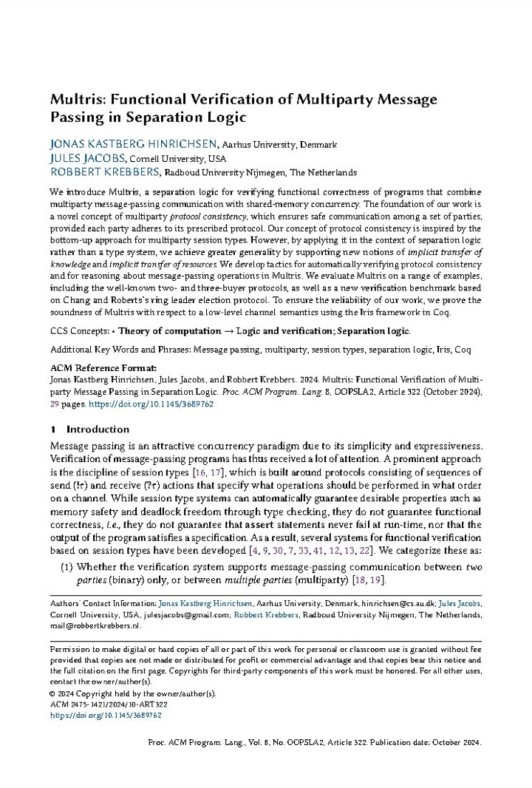

Programs that combine multiparty message passing with shared-memory concurrency are hard to verify. Multris is a separation logic for them, built on multiparty protocol consistency, which allows implicit transfer of knowledge and resources, with tactics that check it automatically. It verifies the two- and three-buyer protocols and a ring leader election, and is proved sound in Coq.

Read the paperWe introduce Multris, a separation logic for verifying functional correctness of programs that combine multiparty message-passing communication with shared-memory concurrency. The foundation of our work is a novel concept of multiparty protocol consistency, which ensures safe communication among a set of parties, provided each party adheres to its prescribed protocol. Our concept of protocol consistency is inspired by the bottom-up approach for multiparty session types. However, by applying it in the context of separation logic rather than a type system, we achieve greater generality by supporting new notions of implicit transfer of knowledge and implicit transfer of resources. We develop tactics for automatically verifying protocol consistency and for reasoning about message-passing operations in Multris. We evaluate Multris on a range of examples, including the well-known two- and three-buyer protocols, as well as a new verification benchmark based on Chang and Roberts’s ring leader election protocol. To ensure the reliability of our work, we prove the soundness of Multris with respect to a low-level channel semantics using the Iris framework in Coq.
@article{hinrichsen2024multris,
title = {Multris: Functional Verification of Multiparty Message Passing in Separation Logic},
volume = {8},
ISSN = {2475-1421},
url = {https://doi.org/10.1145/3689762},
DOI = {10.1145/3689762},
number = {OOPSLA2},
journal = {Proceedings of the ACM on Programming Languages},
publisher = {Association for Computing Machinery (ACM)},
author = {Hinrichsen, Jonas Kastberg and Jacobs, Jules and Krebbers, Robbert},
year = {2024},
month = Oct,
pages = {1446--1474}
}